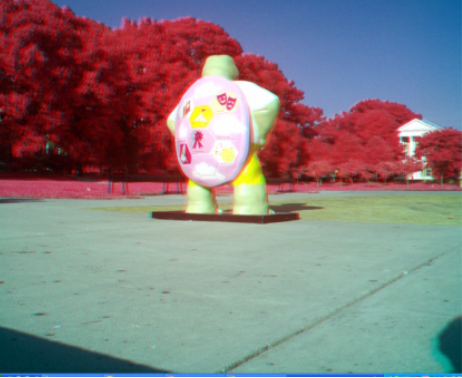
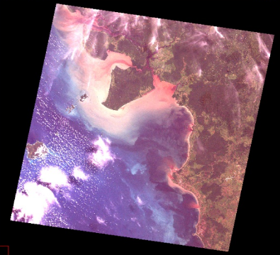

Teledetección e Imágenes Satelitales
Introducción a la Tecnología de Información Geográfica (IMSE1014)
12/5/24
Ejemplos
Liceo El Carmen, San Fernando

Espectro electromagnético

Espectro electromagnético

Principios básicos teledetección
Energía electromagnética que golpea un objeto puede ser absorvida, reflejada o transmitida
Los objetos se ven como el color que deben reflejar.
Los objetos además reflejan otras porciones del espectro.

\(r = f_r/f_i\) (reflectividad)
\(a = f_a/f_i\) (absortividad)
\(t = f_t/f_i\) (transmisividad)
Curva espectral vegetación sana

Aditiva y sutractiva

Sustractiva
- La teoria substractiva tiene como colores primario: Amarillo, Cian y Magenta.
- Los colores complementarios se crean al quitar un color al primario.
- Las pinturas, pigmentos y tintes funcionan con esta teoria
La teoria sustractiva sienta las bases para las impresiones fotográficas.

Teoría aditiva

Teoría aditiva

Teoría aditiva

Composicion de color
Una composición de 3 bandas en falso color incluye una banda de la region no visible del espectro EM
 Imagen de color verdadero
Imagen de color verdadero
 Imagen de falso color, La banda del rojo fue reemplazada por la del infrarrojo cercano
Composicion de color
La banda azul se carga en el canal azul del visualizador.

La banda roja se carga en el canal rojo del visualizador.

La banda azul se carga en el canal azul del visualizador.

El resultado es una composición de color verdadero (RGB)

Landsat (USGS/NASA)

Landsat (USGS/NASA - USA)
Embalse el Yeso

Worldview 4

Espectro electromagnético

Curva espectral
Vegetación

Respuesta de la vegetación
Vegetación

Índices de vegetación
Índice de Diferencia Normalizada (NDVI)
\[NDVI = \frac{NIR-RED}{NIR+RED} \]

Índices de vegetación
Índice de Humedad de Diferencia Normalizada (NDMI)
\[NDMI = \frac{NIR-SWIR}{NIR+SWIR} \]

Bandas Sentinel-2
Imágenes Sentinel-2

Utilidad
Permite realizar operaciones aritméticas con datos raster

Para cálculo de Índices de Vegetación
La vamos a utilizar para calcular los índices de vegetación NDVI y NDMI.
\[NDVI = \frac{NIR-RED}{NIR+RED} \]
\[NDMI = \frac{NIR-SWIR}{NIR+SWIR} \]